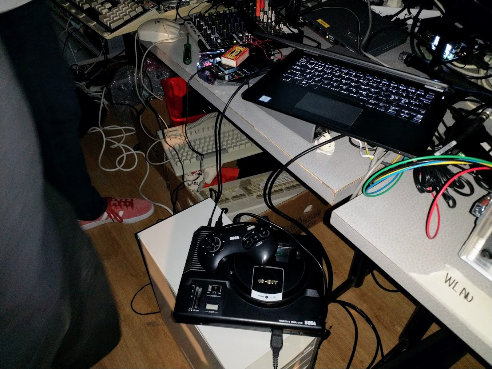
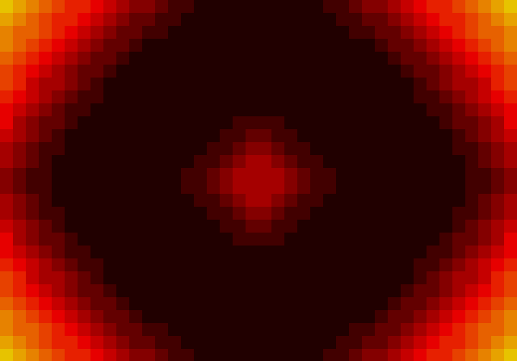
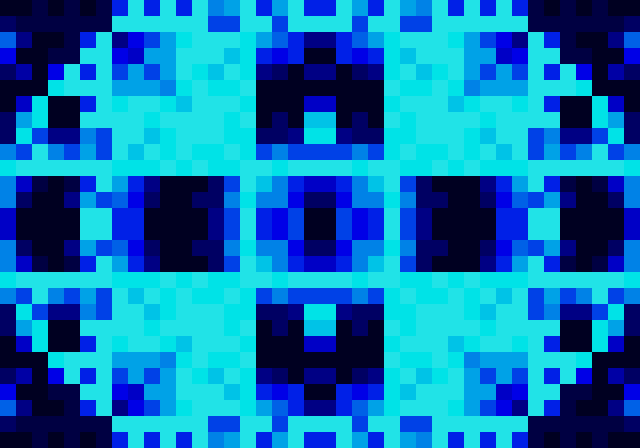
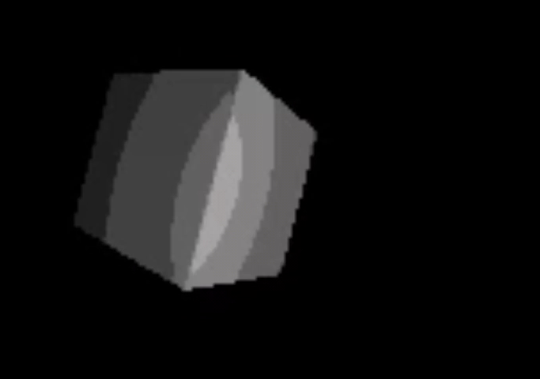
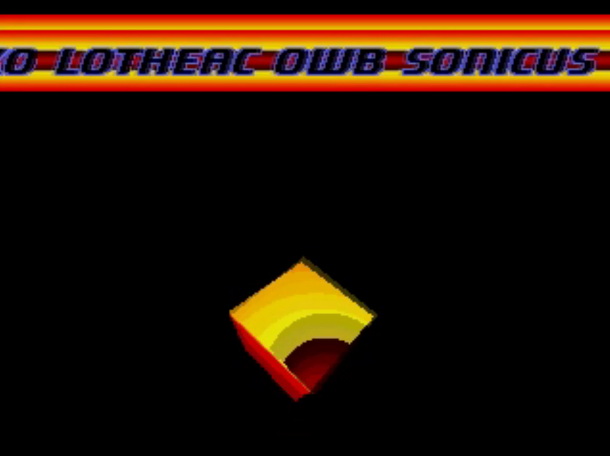
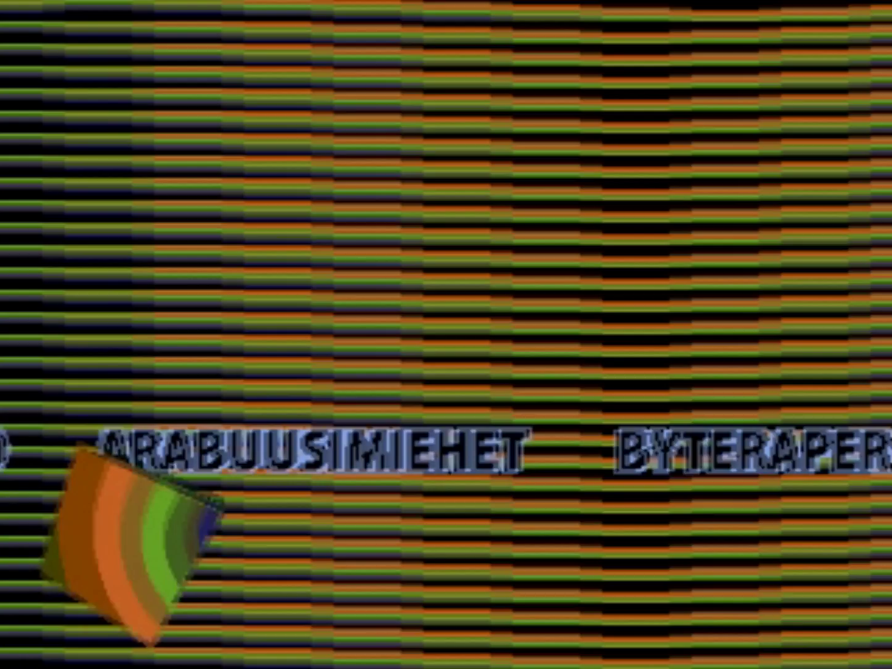
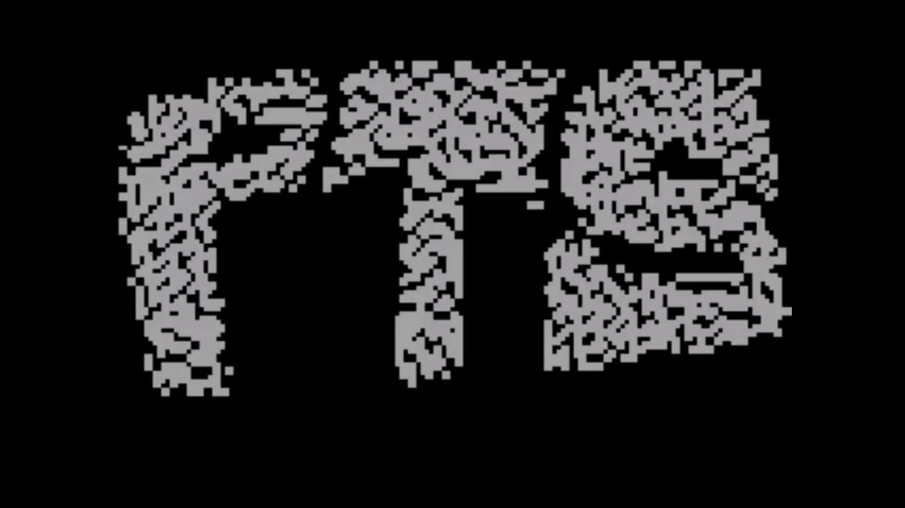
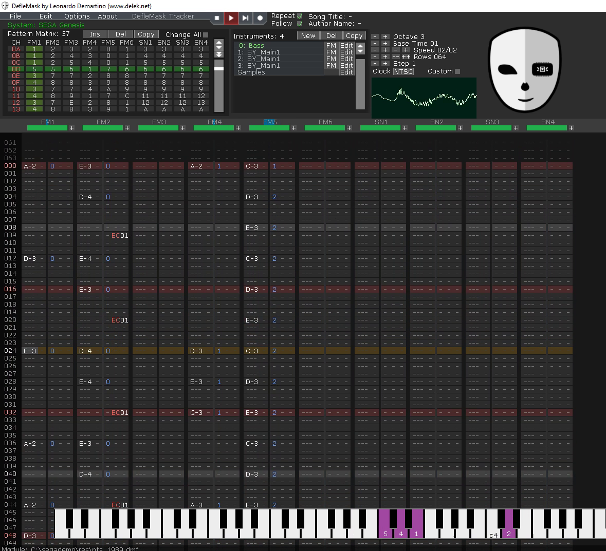
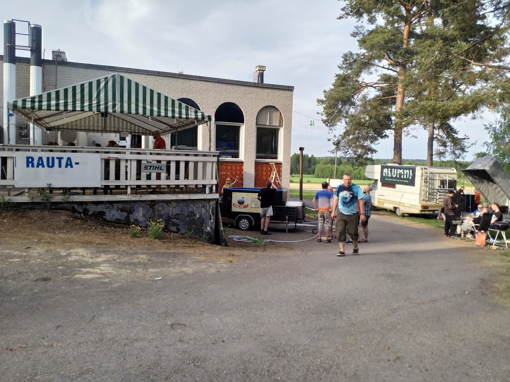

ptsd - Sega Megadrive demo
2018-08-05

At Simulaatio 8 demoparty our newly formed demogroup, pts, released our very first prod. This was a Sega Megadrive demo participating in the oldschool demo compo. As our group consisted of people without any real prods under our belt this was the first proper entry for all of us. Our goal was to simply get something released. With this in mind we got together on a (according to git logs) August evening and got the first lines written with some sauna and beer to accompany us.
We were using the SGDK toolchain which allowed us to write C instead of forcing us to go the full mile with raw assembly off the bat. Earlier we had tried working on a Amiga 500 demo where the only viable option was assembly, and it was clear to us that if we were to get something finished we had to take some shortcuts. This SGDK was Windows only, but there exists a project called Gendev with some hacks to make it work with GCC on Linux. After some evenings of cursing we had a working Linux compiler that produced a rom file we could run in an emulator, and eventually with a real Sega Megadrive console using an SD card.
Now, none of us really knew how to write oldschool demos. I was the only guy in our group who had worked with graphics programming to any degree earlier and my knowledge was entirely OpenGL / shader based where the philosophy is generally to write the code assuming each pixel can run a separate function to calculate its color values. The hardware of choice was so limited we couldn’t even perform any kind of full screen effects pixel-by-pixel, regardless of how simple the function used. We had some real learning ahead of us for the following months. Eventually, after about few evenings of coding and some final wrapups at the Simulaatio demoparty, we had a finished product with only two issues that were related to the real hardware vs emulation. We placed 4/6 in the oldschool demo compo.
I’ll now go through all the effects we managed to output.
Wave patterns

The demo begins with a wave pattern using gradient colors. This effect calculates the distance of each pixel to the center of the screen and then applies a time based offset, producing a cyclic wave pattern. The first implementation of this effect was in our git repo for a long time, and we were about to just ditch it as it was running about 0.5 FPS. This was all as I was still attempting to produce graphics using the shader coder’s approach of calculating each pixel’s value one-by-one by iterating through the whole screen. We managed to optimize this effect to a passable FPS by realizing that the effect only needs to compute the upper-left quarter of the screen and the other quarters can simply use the already computed tiles - they are the same tiles in different order. This allowed us to calculate only 25% of the original work.
The effect works at tile resolution - instead of calculating values per-pixel, it calculates them per-tile. This again allows reducing the computation by some degree (not sure precisely how much), but ultimately instead of having a 3rd nested for loop for iterating 8x8 pixels at some region of the screen we can simply assign a value for a 8x8 tile. The effect looks passable with this limitation.

At the party we had to replace one shitty effect I had written earlier which none of us really liked. As the wave pattern was now optimized it was reasonably simple to get something quick modded out of it. We added an alternative distance function by randomly writing assorted operations to the distance computation and (after some bugfixing by lotheac. One of these days I’ll remember to not left-shift signed ints and clamp my lookup table indices) farted something passable on the screen to add some more seconds in the demo.
UKK
Personally my favorite effect of the whole demo, written by Sonicus, this effect was an exercise in using horizontal interrupts to create a water surface distortion. This one took a particularly sizable amount of perkele / s to get working and still ended up having an issue on the real hardware that didn’t appear with the emulators: The real hardware has pixel sized gaps between the water ripples, something no emulator seems to produce. We still didn’t solve the largest outstanding issue in our demo which was finding a public domain photo of God Emperor Paavo Väyrynen and had to stick with Kekkonen instead.
First two images are loaded: Kekkonen on plane A, then the background sunset on plane B. A horizontal interrupt callback is created which iterates a sin lookup table index at every scanline (pre-generated), then offsets that horizontal line by some amount based on the table. Water.
100% realtime computed 3D cube

After some coffee-induced euphoria I created a Blender scene that rendered the default cube into a tileset. It’s animated. What else is there to say? It’s pre-generated, but it runs on a Sega Megadrive. If we can cram up a pre-rendered animation in the Megadrive’s memory it’s fair game!
Scroller pipes

The first effect we wrote, and as basic as it gets: A raster bar that moves up and down while cycling a color palette. The raster bar is simply a sequence of 8x8 tiles being rendered across a full horizontal plane while the plane is being cleared behind the raster bar, removing a trail that would otherwise paint the whole screen. This effect wasn’t too interesting alone, so we added the credits scroller over it.
The cube appearing on this effect was originally a bug. After I had added the prerendered cube on the screen, I had no idea how to properly delete the sprite using the SGDK API. The side effect is that the cube remains on the screen with the palette swapping overwriting the cube’s colors. Only thing we needed to do was add some movement from an earlier effect of Sonicus’ and we had a neat layered effect going on.
The scroller text is simply a 2D image constructed by the toolchain’s image processing tools. It took some persuasion to make the image load properly.

This was an attempt in using the VDP’s scrolling features. The effect works by drawing an 8x8 tile at the right edge of the screen. The screen is then scrolled, and a new tile is rendered at the edge. With some timing, it’s possible to offset the rendered tiles a bit so that they look to be curving a bit. There’s also a palette swap going on that was originally an attempt to create a shading that gave the pipes a 3D appearance, but simply ended up being a pleasing choice of gradient palette swapping.
Crypto

owb’s contribution is one of the better effects. This is two planes moving in opposite directions on a circular path using the scrolling capabilities of the VDP. There’s a compile-time step that generates the noise images that form the “crypto” message, and tbh I never really bothered to understand how they worked. As the patterns are rotated, they create a noise that eventually resolves into the “pts” text concluding the demo with a satisfyingly time-synced bass note, followed by a music playback glitch that restarts the song. This was one of the two bugs we saw with the real hardware that somehow didn’t happen with the emulators we used. The whole music timing itself is a bit off on the real hardware. We never really figured out the true reason for this.
Transitions
Lotheac wrote a bunch of neat transition effects for clearing the screen and moving between effects, but at the party we were experiencing so many bugs with the system state being confusing across effects that we had to drop them. The effects are simply transitoned by a black screen.
Music

We had no musicians in our group. As we know there’s no shortage of even oldschool composers in the demoscene we were considering outsourcing the music, but we still felt we should first at least try ourselves. I knew some basics of music and gave it a shot, but still had to learn a tool that I had no prior experience with: Trackers. After googling for “Sega Megadrive tracker” I opened the first link, DefleMask, and tried writing random crap with it while reading the manual. We decided a funk song would fit the spot.
After about a week of tweaking I had some bass lines down that worked, but I couldn’t get a funky guitar done using the frequency modulation pipeline used in DefleMask / YM2612. I decided to abort the funk idea and wrote down something else. After about 2 more weeks we had a song prototype that sounded good enough for the demo. At the party we timed the song so it went smoothly with the structure of the demo and called the project done, heading to sauna & palju.
Thoughts

I had a conversation with a guy (edi?) from the Exotic Men at the party. We discussed emulators and he pointed out he had seen something with Amiga 500 that worked on the emulator but not real hardware (or was it the other way around?). This is something that seems to be rarer on Amiga, Commodore 64 and other home computer system emulators than on consoles. Demoscene has generally been focused on more accessible home computers where no hard-to-manufacture cartridges are required. NES and Gameboy emulators have a very high degree of accuracy while Megadrive emulators are mostly approximately correct. An ideal emulator would even emulate the bugs in the original hardware. We had some effects that worked perfectly on a particular emulator while some other emulator had differing results. As such we were somewhat nervous when we moved the rom image onto the SD card two hours before the compo deadline and tried running the final version of the demo on the real beast. Luckily the problems that manifested didn’t break the demo that much: The sound was playing a tiny bit faster, finishing the song one bar too early, and the Kekkonen interrupt effect displayed some glitches in the lower part of the image.
We managed to get the demo done even if it left a lot to be desired. As Harekiet put it, it’s not quite Titan yet but that’s the next one, right?
Links: